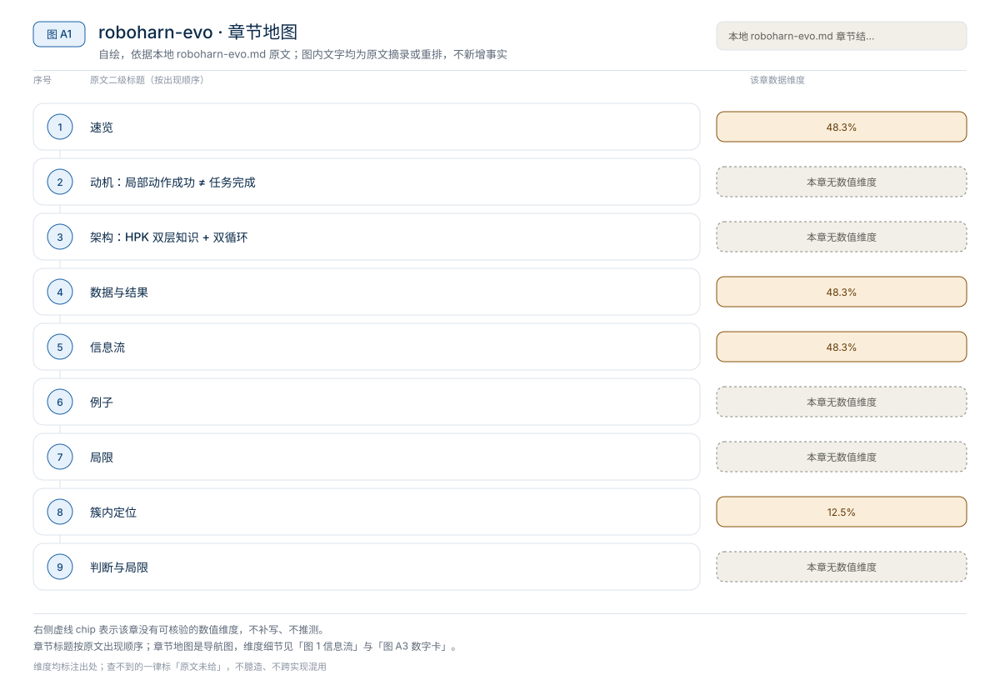
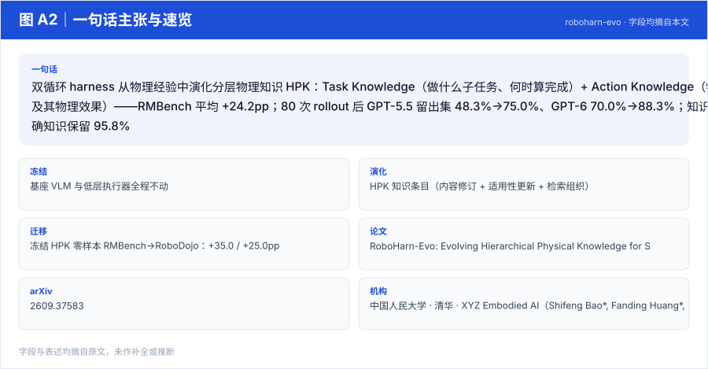
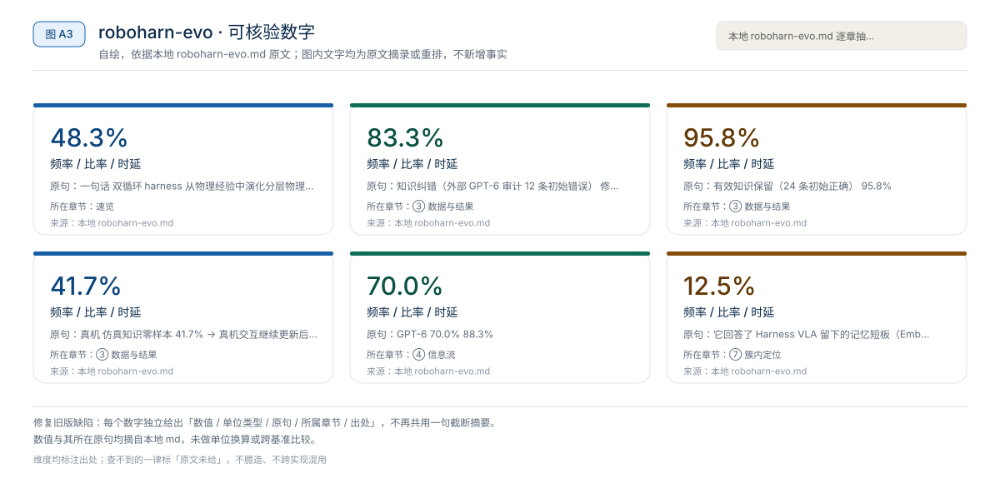
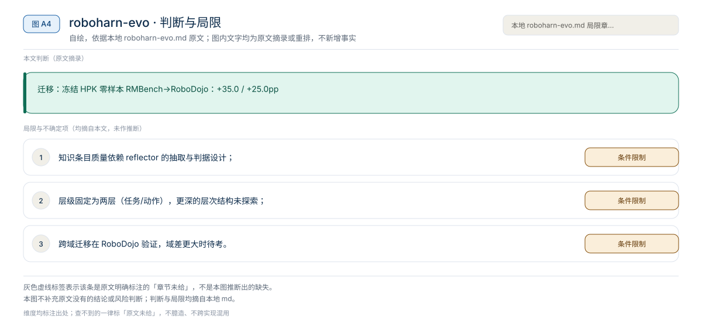

【Harness VLA · 代码即策略与技能发现】RAX 深读：把在线探索做成 Scaling Law，五大基准平均领先 37.4 个点
冻结通用 coding agent 直接连机器人感知/控制接口，把"在线探索"做成 scaling law：成功决策编译成程序、版本化入库，能力随探索预算单调增长
Harness01-代码即策略与技能发现2026
双循环 harness 从物理经验中演化分层物理知识 HPK：Task Knowledge（做什么子任务、何时算完成）+ Action Knowledge（物体相对几何策略及其物理效果）——RMBench 平均 +24.2pp；80 次 rollout 后 GPT-5.5 留出集 48.3%→75.0%、GPT-6 70.0%→88.3%；知识纠错 83.3%，正确知识保留 95.8%
原题与资源：RoboHarn-Evo: Evolving Hierarchical Physical Knowledge for Self-Improving Robotic Manipulation · arXiv:2609.37583
一句话：双循环 harness 从物理经验中演化分层物理知识 HPK：Task Knowledge（做什么子任务、何时算完成）+ Action Knowledge（物体相对几何策略及其物理效果）——RMBench 平均 +24.2pp；80 次 rollout 后 GPT-5.5 留出集 48.3%→75.0%、GPT-6 70.0%→88.3%；知识纠错 83.3%，正确知识保留 95.8%
阅读成本：正文约 2281 字 / 8 个章节 / 4 张图；目录按本文原有章节顺序排列，章节内容未改动。
目录（点击跳到对应章节）：

图 A1：本文章节地图（节点即原文 h2 标题）。自绘，依据本文，不新增事实。
| 项 | 内容 |
|---|---|
| 一句话 | 双循环 harness 从物理经验中演化分层物理知识 HPK：Task Knowledge（做什么子任务、何时算完成）+ Action Knowledge（物体相对几何策略及其物理效果）——RMBench 平均 +24.2pp；80 次 rollout 后 GPT-5.5 留出集 48.3%→75.0%、GPT-6 70.0%→88.3%；知识纠错 83.3%，正确知识保留 95.8% |
| 冻结 | 基座 VLM 与低层执行器全程不动 |
| 演化 | HPK 知识条目（内容修订 + 适用性更新 + 检索组织） |
| 迁移 | 冻结 HPK 零样本 RMBench→RoboDojo：+35.0 / +25.0pp |

图 A2：一句话主张与速览字段。自绘，依据本文，不新增事实。

图 A3：本文可核验的数字摘录。自绘，依据本文，不新增事实。
一个具体任务走一遍 · 本文可核验数字与字段速查（以下均摘自原文，未作推算）：
| 层 | 内容 | 检验判据 |
|---|---|---|
| Task Knowledge | 执行哪个子任务、完成条件是什么（如"红块之后揭绿块"） | 子任务完成 |
| Action Knowledge | 物体相对几何策略 + 预期与观测到的物理效果（如"从顶部把手接近盖子，检查何种效果"） | 预期局部物理效果 |
| 指标 | 数字 |
|---|---|
| RMBench 平均成功（HPK vs 无 HPK 同 harness） | +24.2pp |
| 80 rollouts 后留出集（知识冻结、评估反馈不更新） | GPT-5.5 48.3%→75.0%；GPT-6 70.0%→88.3% |
| 知识纠错（外部 GPT-6 审计 12 条初始错误） | 修复/停用 83.3%（GPT-6 达 91.7%） |
| 有效知识保留（24 条初始正确） | 95.8% |
| 零样本跨域迁移（RMBench→RoboDojo） | +35.0 / +25.0pp |
| 真机 | 仿真知识零样本 41.7% → 真机交互继续更新后 62.5% |
执行：scene+goal → Task 检索("做什么") → 子任务 → Action 检索("怎么做")
→ 当前场景 grounding → 执行 → 记录前后观测/工具调用/物理结果
更新：reflector 抽取 Task/Action 条目 → 按各自判据检验
→ 修订/合并/停用 → 更新检索索引 → 供下一 episodeRMBench held-out 成功率（80 交互 rollouts 后）：
| 底座 | 初始 | 自演化后 |
|---|---|---|
| GPT-5.5 | 48.3% | 75.0% |
| GPT-6 | 70.0% | 88.3% |
完整 HPK 相对"同 harness 无 HPK"平均提升最多 +24.2pp；冻结知识零样本迁移到 RoboDojo：+35.0pp（GPT-5.5）/ +25.0pp（GPT-6）。
"红块之后揭绿盖"：Task Knowledge 记录顺序与"盖子完全离开绿块"的完成判据；Action Knowledge 记录"抓盖顶把手、垂直上提 5cm、检查盖下无接触"的策略与预期效果。执行中释放偏移 → 外循环修订该 Action 条目的适用条件，而不是笼统记一条"失败"。
本文判断：迁移：冻结 HPK 零样本 RMBench→RoboDojo：+35.0 / +25.0pp
局限与不确定项（以下均摘自本文，未作推断）：

图 A4：局限与不确定项摘录。自绘，依据本文，不新增事实。
覆盖范围：本页新增的导读、目录、章节地图、数字卡与局限清单，均为原文信息的重排或摘录；正文、数据与实验结论未改动。